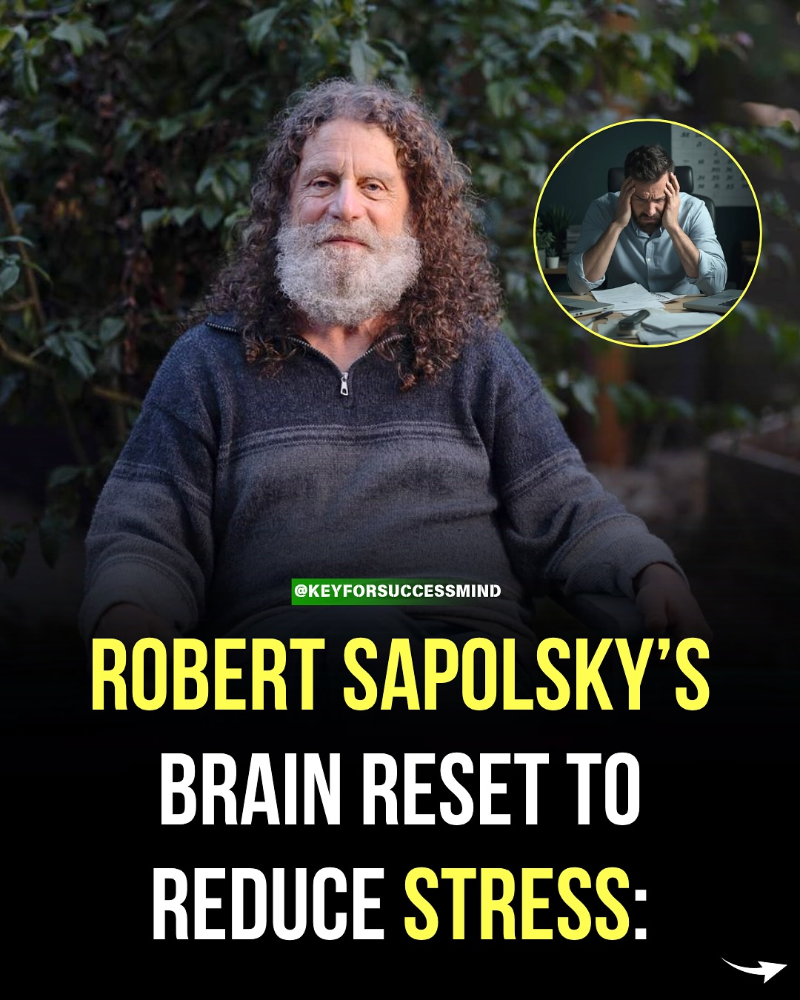
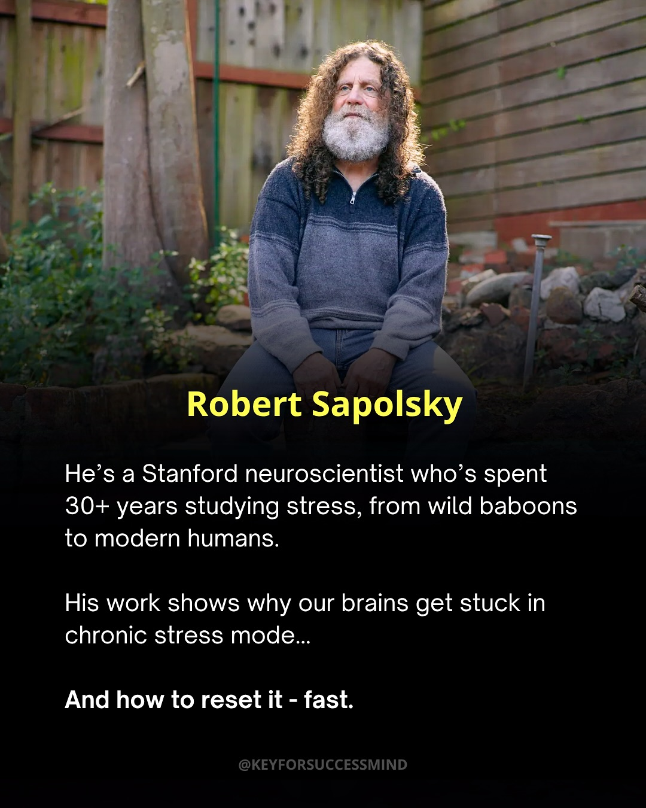
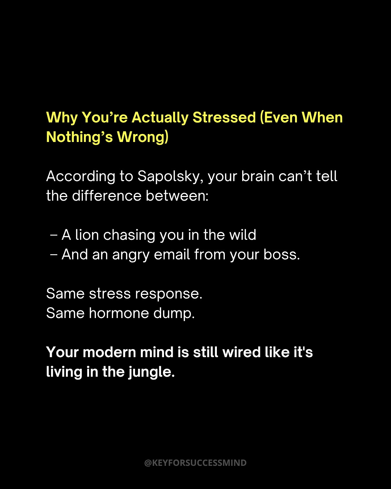
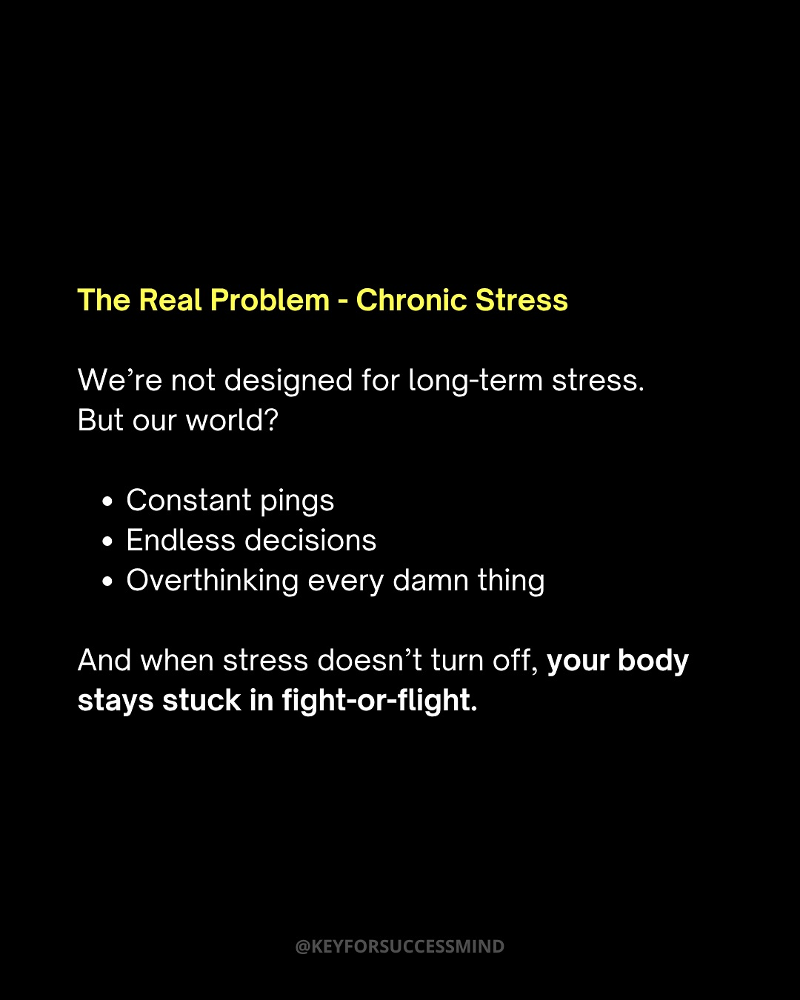
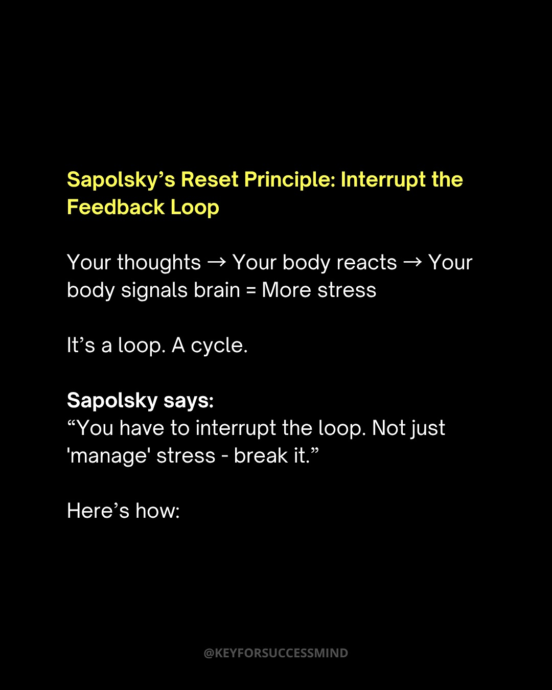
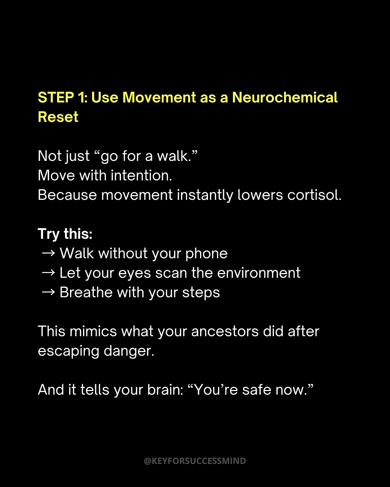
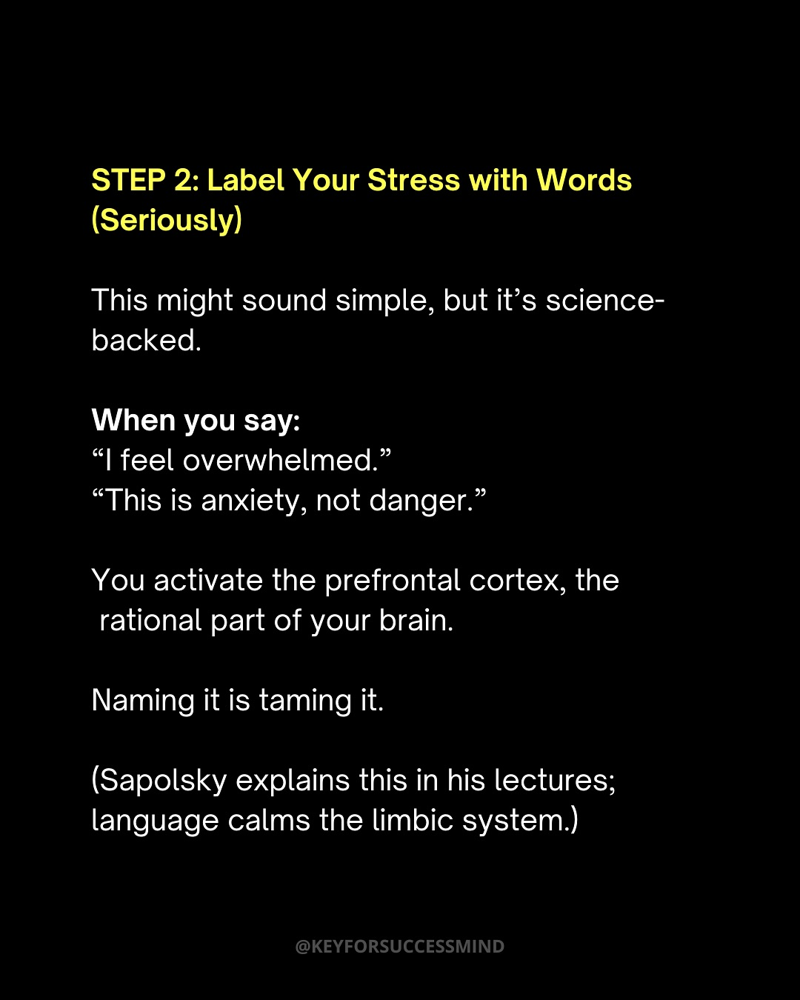
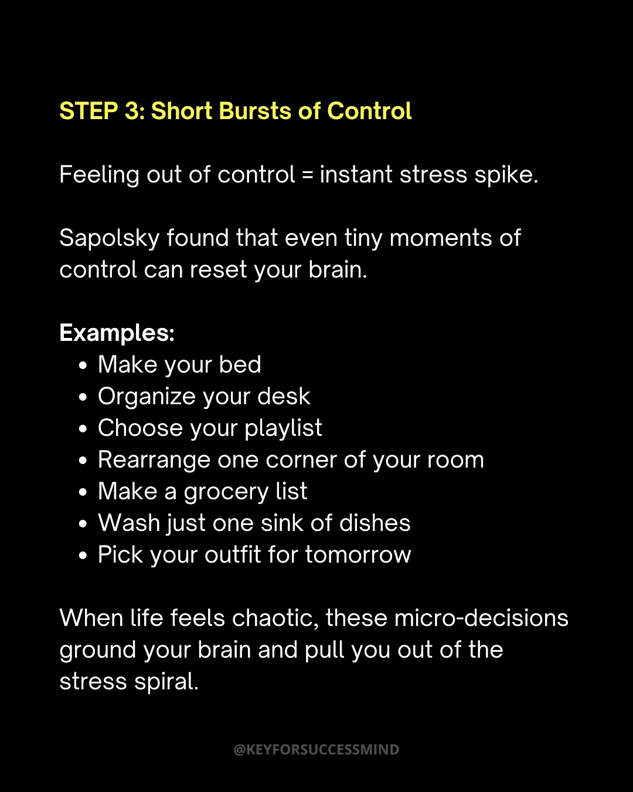
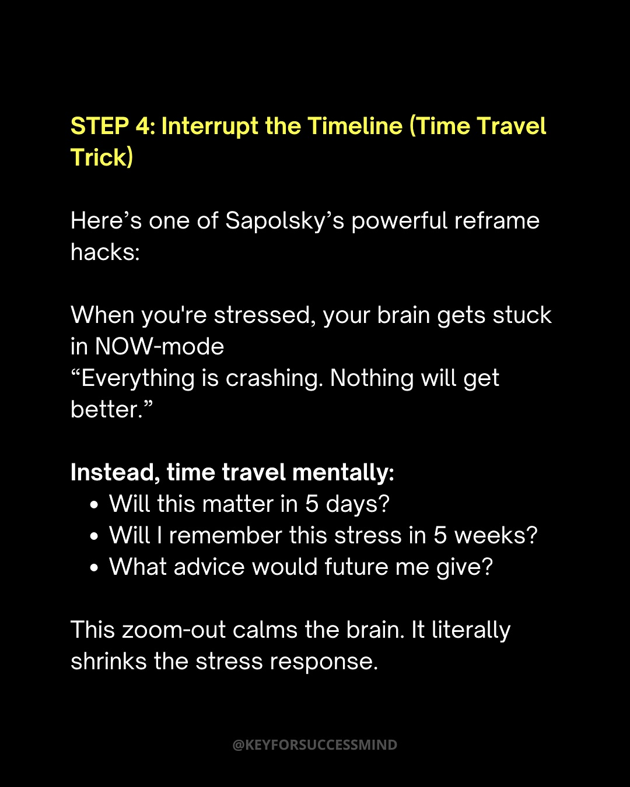

Instagram Post

ROBERT SAPOLSKY'S BRAIN RESET TO REDUCE STRESS:
carousel (10 slides) (enriched by ClaudeClaw)
Summary
ROBERT SAPOLSKY'S BRAIN RESET TO REDUCE STRESS: | ROBERT SAPOLSKY'S BRAIN RESET TO REDUCE STRESS: | Robert Sapolsky He's a Stanford neuroscientist who's spen... | Why You're Actually Stressed (Even When Nothing's Wrong) ... | The Real Problem - Chronic Stress We're not designed for ... | Sapolsky's Reset Principle: Interrupt the Feedback Loop Y... | STEP 1: Use Movement as a Neurochemical Reset...
1
@KEYFORSUCCESSMIND ROBERT SAPOLSKY'S BRAIN RESET TO REDUCE STRESS:
An older man with long curly hair and a beard sits outdoors, while a smaller inset image shows a man looking stressed at a desk.
2
@KEYFORSUCCESSMIND ROBERT SAPOLSKY'S BRAIN RESET TO REDUCE STRESS:
An older man with long curly hair and a beard sits outdoors, while a circular inset image in the top right shows a man looking stressed at a desk.
3
Robert Sapolsky He's a Stanford neuroscientist who's spent 30+ years studying stress, from wild baboons to modern humans. His work shows why our brains get stuck in chronic stress mode... And how to reset it - fast. @KEYFORSUCCESSMIND
A man with long curly hair and a white beard sits outdoors in a striped sweater and jeans, with a wooden fence, tree, and rocks in the background, and text overlaid on the lower portion of the image.
4
Why You're Actually Stressed (Even When Nothing's Wrong) According to Sapolsky, your brain can't tell the difference between: – A lion chasing you in the wild – And an angry email from your boss. Same stress response. Same hormone dump. Your modern mind is still wired like it's living in the jungle. @KEYFORSUCCESSMIND
A text-based infographic on a black background explains why people feel stressed, comparing ancient threats to modern stressors.
5
The Real Problem - Chronic Stress We're not designed for long-term stress. But our world? • Constant pings • Endless decisions • Overthinking every damn thing And when stress doesn't turn off, your body stays stuck in fight-or-flight. @KEYFORSUCCESSMIND
A text-based image with white and yellow text on a black background, discussing chronic stress and its effects.
6
Sapolsky's Reset Principle: Interrupt the Feedback Loop Your thoughts → Your body reacts → Your body signals brain = More stress It's a loop. A cycle. Sapolsky says: “You have to interrupt the loop. Not just 'manage' stress - break it.” Here's how: @KEYFORSUCCESSMIND
A black background displays text in yellow and white, outlining "Sapolsky's Reset Principle" regarding stress and feedback loops.
7
STEP 1: Use Movement as a Neurochemical Reset Not just “go for a walk.” Move with intention. Because movement instantly lowers cortisol. Try this: → Walk without your phone → Let your eyes scan the environment → Breathe with your steps This mimics what your ancestors did after escaping danger. And it tells your brain: “You’re safe now.” @KEYFORSUCCESSMIND
The image displays text on a black background, providing advice on using movement as a neurochemical reset.
8
STEP 2: Label Your Stress with Words (Seriously) This might sound simple, but it's science-backed. When you say: “I feel overwhelmed.” “This is anxiety, not danger.” You activate the prefrontal cortex, the rational part of your brain. Naming it is taming it. (Sapolsky explains this in his lectures; language calms the limbic system.) @KEYFORSUCCESSMIND
The image displays white and yellow text on a black background, presenting advice on how to label stress with words to manage it, with a social media handle at the bottom.
9
STEP 3: Short Bursts of Control Feeling out of control = instant stress spike. Sapolsky found that even tiny moments of control can reset your brain. Examples: • Make your bed • Organize your desk • Choose your playlist • Rearrange one corner of your room • Make a grocery list • Wash just one sink of dishes • Pick your outfit for tomorrow When life feels chaotic, these micro-decisions ground your brain and pull you out of the stress spiral. @KEYFORSUCCESSMIND
The image displays white and yellow text on a black background, outlining "STEP 3: Short Bursts of Control" with examples of small actions to manage stress.
10
STEP 4: Interrupt the Timeline (Time Travel Trick) Here's one of Sapolsky's powerful reframe hacks: When you're stressed, your brain gets stuck in NOW-mode “Everything is crashing. Nothing will get better.” Instead, time travel mentally: • Will this matter in 5 days? • Will I remember this stress in 5 weeks? • What advice would future me give? This zoom-out calms the brain. It literally shrinks the stress response. @KEYFORSUCCESSMIND
The image displays white and yellow text on a black background, outlining a stress management technique called "Interrupt the Timeline (Time Travel Trick)."
All slides







